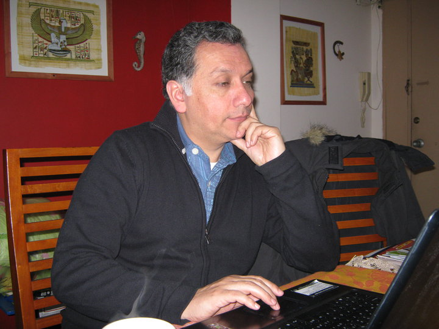
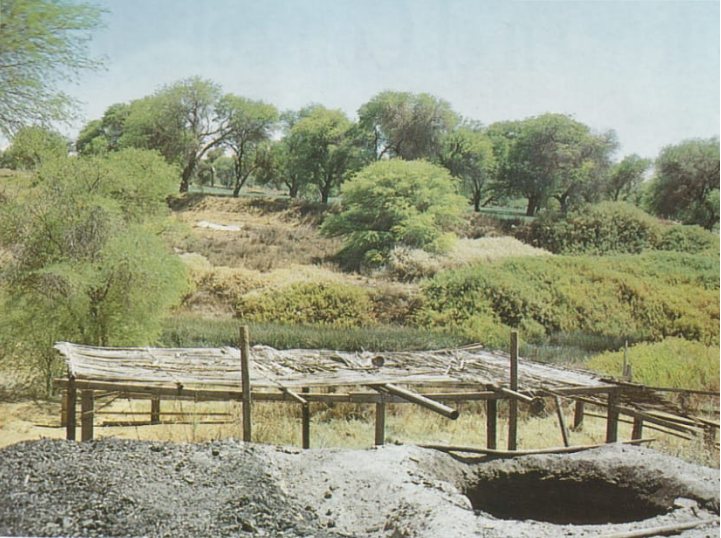
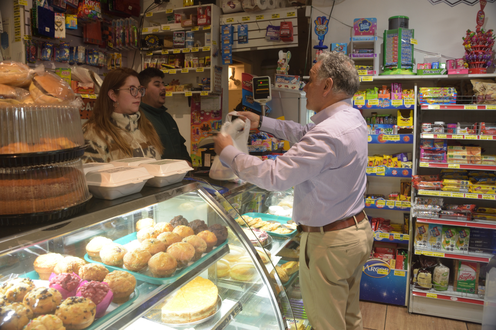
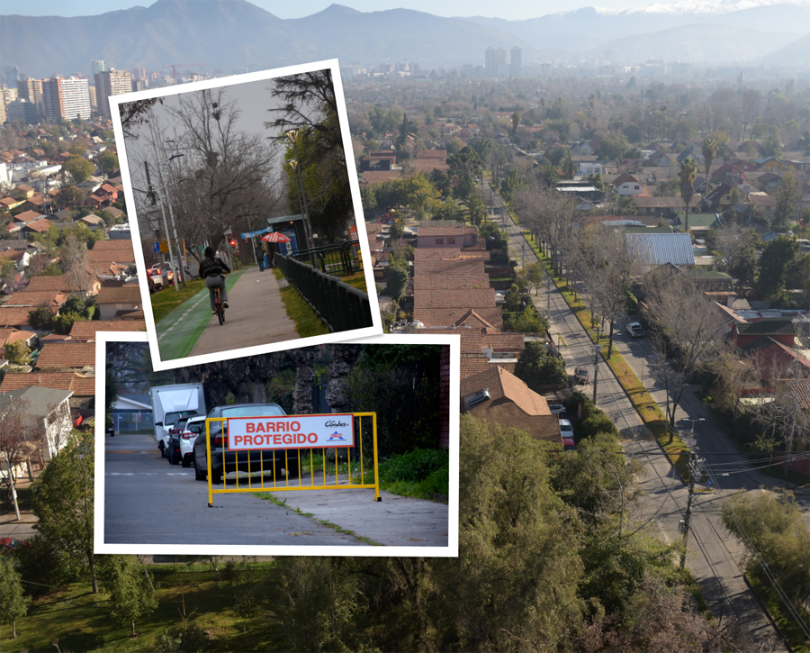
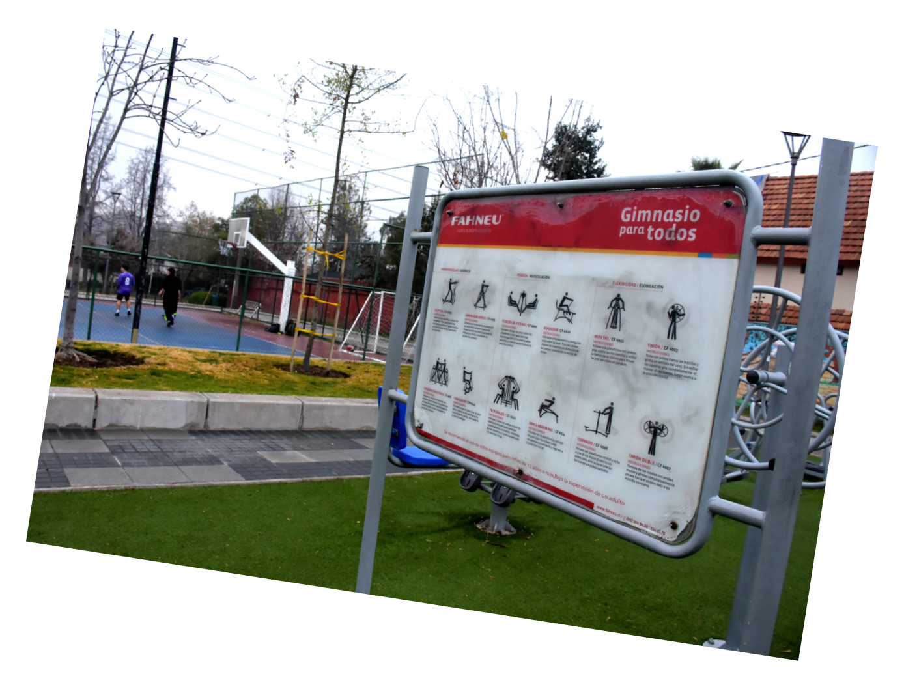
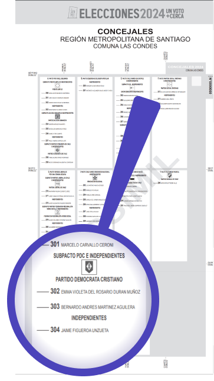

Soy un vecino como tú. He vivido en Las Condes por casi 20 años y mis inquietudes son las de un padre de familia y profesional que ha hecho de esta comuna su lugar favorito. Espero que esta página te sirva para conocerme.
Como ingeniero forestal, he dedicado gran parte de mi vida al servicio público, principalmente en la Corporación Nacional Forestal, y como docente en materias de prevención de riesgos y medioambiente. Desde el Concejo Municipal pretendo poner al servicio de la comunidad mi experiencia de más de 30 años en materias de conservación, ambientales, fiscalización y manejo forestal.
Por más de 32 años como profesional de la ingeniería forestal he volcado mi pasión por la protección del medio ambiente y el desarrollo forestal, en diversas actividades tanto en ámbitos públicos y privados
Representación en instancias y foros internacionales tales como la Convención sobre el Comercio Internacional de Especies Amenazadas de Fauna y Flora Silvestres; CITES y en el Grupo de Expertos Sobre Tala Ilegal y Comercio Asociado (EGILAT por sus siglas inglés) del Foro de Cooperación Económica Asia-Pacifico (APEC).
Ejercicio de la docencia en materias de prevención de riesgos y medioambiente. Profesor adjunto de la Carrera de Ingeniería en Prevención de Riesgos y Medioambiente en la Universidad Miguel de Cervantes

Análisis, seguimiento, formulación y propuestas de aspectos normativos en plantaciones forestales, bosque nativo y de formaciones vegetacionales en general. Planificación, evaluación, administración y seguimiento de procesos de fiscalización y monitoreo forestal.

Gestión de administración de proyectos agroproductivos, manejo silvícola, estudios agroforestales, sistemas de información, viveros forestales, fiscalización de la normativa forestal y ambiental, protección fitosanitaria, catastro e inventarios de plantaciones y vegetación nativa y prevención de riesgos.
Creo en la Democracia y en poner a las personas en el centro del servicio público. No como meros espectadores sino que como participes de su destino. Esto es clave para encontrar soluciones a los problemas que como vecinos nos aquejan cotidianamemente.


Creo firmemente en la importancia de una gestión eficiente en el uso de los recursos municipales. Desde mi posición como concejal, me aseguraré de que las políticas municipales se ejecuten correctamente y con transparencia, enfocándome en áreas clave como la educación, la cultura, el transporte y, especialmente, en la protección del medio ambiente, la gestión de las áreas verdes y la prevención de riesgos asociados al manejo arbóreo, aprovechando mi experiencia como ingeniero forestal.

Mi visión para Las Condes es una comuna donde todos se sientan escuchados y apoyados en sus necesidades diarias. Pertenezco a Las Condes y recorro todos los días sus calles. Espero ser un concejal cercano, al que puedan acudir los vecinos y las vecinas. Estoy decidido a promover una rendición de cuentas transparente y responsable, asegurando que cada decisión y acción beneficie a la comunidad en su conjunto.
Además, fomentaré el desarrollo de iniciativas que fortalezcan la educación, el deporte y el bienestar social, apoyando a las comunidades en sus desafíos diarios. Creo que juntos podemos construir una comuna más verde, inclusiva y vibrante, donde la calidad de vida sea nuestra principal meta.
Bernardo Martínez
Qué es el Concejo Municipal
Es una entidad de carácter normativo, resolutivo y fiscalizador, encargada de hacer efectiva la participación de la comunidad local y de ejercer las atribuciones que señala la ley.
El Concejo Municipal de Las Condes está compuesto diez concejales que se eligen en votación directa mediante un sistema de representación proporcional.
¿Cuándo son las elecciones (año 2024)?
Los días 26 y 27 de octubre se elige simultáneamente alcaldes, concejales, gobernadores y consejeros regionales, con voto obligatorio. El período de propaganda se extiende desde el sexagésimo hasta el tercer día anterior al de la misma elección.
¿Cómo voto por Bernardo?
Para votar tendrás 4 cédulas electorales. En la boleta de color blanco encontrarás los candidatos a concejal. El listado donde aparece Bernardo se encuentra en el número 303 del subpacto PDC e Independientes.

No debes olvidar llevar tu cédula de identidad y lápiz pasta azul.